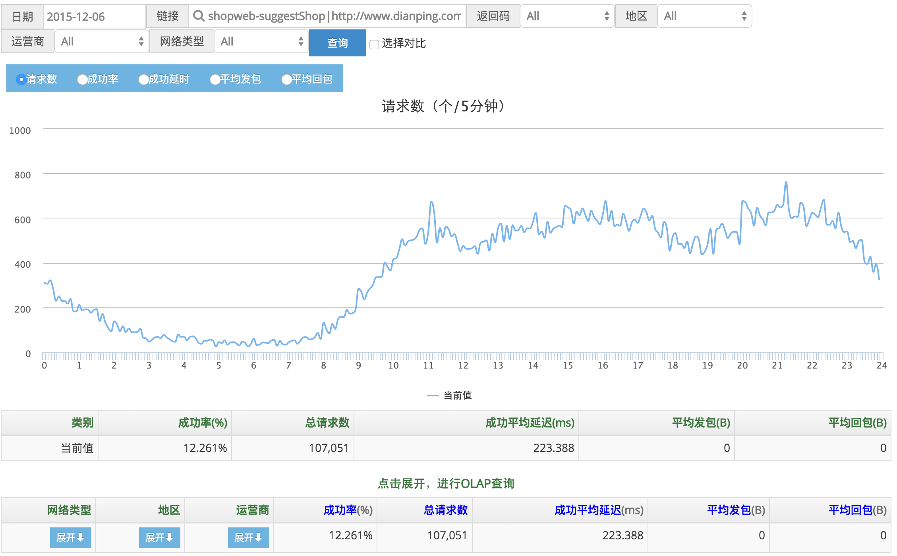
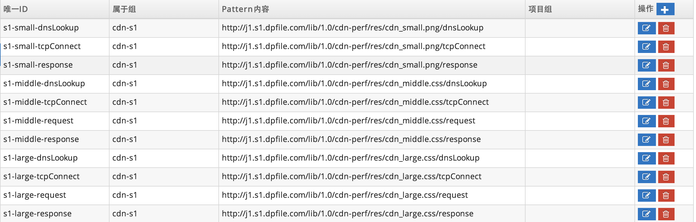
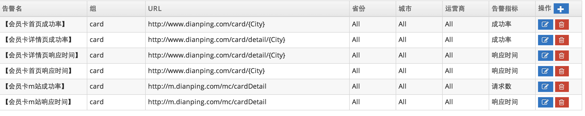
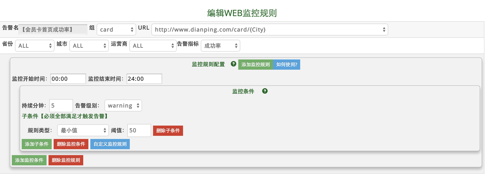
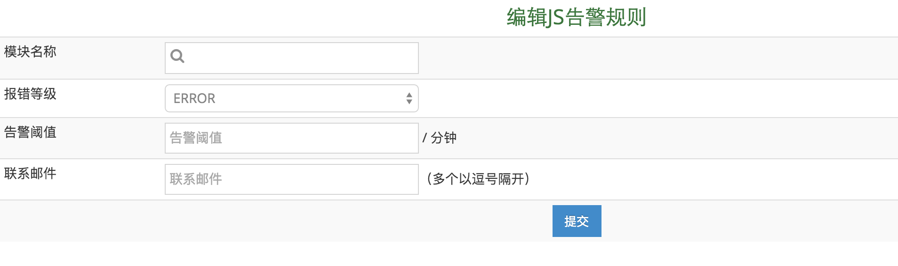

1、Browser使用说明 访问链接
监控点评Web页面的ajax的接口调用情况，这个是从用户Web浏览器采集的数据，从用户角度看点评接口的访问速度。
分析的维度有地区、运营商等。
此部分需要前端框架cortext配合，进行前端打点。
Sample：下图显示了shopweb-suggestShop一段时间的访问情况。
2、配置 访问链接
3、告警 访问链接
A) 配置一览表
B) 配置告警规则
（1）告警名自定义，方便区分告警项。可对请求数、访问成功率、响应时间进行监控。
（2）多个监控规则构成了告警的主体，分别对不同时间段进行配置，以方便准确地进行告警。
（3）监控规则诠释着某个时间段内如何进行告警，由任意多个监控条件组成。任何一条监控条件触发都会引起监控规则触发，从而告警。
（4）监控条件诠释着什么条件会触发监控规则，由任意多个监控子条件组成。当所有子条件同时被触发时，才会触发该监控规则。
用户端监控文档
a).从用户端角度来看点评的业务接口状态，这是一个端到端的监控，能最早的发现用户端出现问题，比如根本访问不到点评，某城市延迟很大等。
b).用户端的监控目前能监控Ajax接口，页面Page不能监控到。
c).一般一个应用会监控1-2个重要接口，后端实时分析会按照城市、运营商维度做一些聚合分析。
外部监控API文档
用途：提供外部监控的Http接口，用于监控用户端的错误信息。
1、为了保留以后的扩展性，移动端和Web端的暂定用不同的API接口。
2、公网IP，221.181.67.144 文档后面{ip}使用这个。
Web单次接口
http://{ip}/web-broker-service/api/ajax
参数说明
| query名 | 实际名称 | 描述 | 类型 |
|---|---|---|---|
| v | version | API版本号 | 暂定为1 |
| ts | timestamp | 发生时间 | long型，1970到现在的毫秒数 |
| tu | targetUrl | 调用的URL或API | String |
| d | duration | 访问耗时 | long 毫秒 |
| c | code | 返回结果码 | 整型 |
| s | requestByte | 发送字节数 | 整型，以byte为单位 |
| r | responseByte | 返回字节数 | 整型，以byte为单位 |
| n | network | 网络类型 | 整型, 2G,3G,4G,WIFI(iOS只有3G和WIFI)，1=wifi, 2=2G, 3=3G, 4=4G, 0=Unknown |
JS 错误上报接口
http://{ip}/web-broker-service/api/js
参数说明
| query名 | 实际名称 | 描述 | 类型 |
|---|---|---|---|
| v | version | API版本号 | 暂定为1 |
| t | timestamp | 发生时间 | long型，1970到现在的毫秒数 |
| msg | message | 错误的类型,简要信息 | String |
| n | appName | 错误的发生的应用模块 | String |
| l | level | 错误等级 | String,包括ERROR,WARN,INFO,DEV |
| a | agent | 浏览器信息 | String |
| id | dpid | 用户ID，用于搜索错误日志 | String |
| data | data | 详细出错信息 | String，如果没有的话，传空串 |
Web原始日志上报接口
http://{ip}/web-broker-service/api/log 批量接口POST内容，前面加上v=1&c=，不同请求之间用回车
ENTER分隔，字段之间用TAB分隔。
timstampTABlevelTABrequestIdTABappNameTABurlTABmessageENTER sample如下: v=1&c= 1400037748182TABERRORTAB11233333TABshopInfoTABurl1TABtest1ENTER 1400037748182TABINFOTAB22339283TABshopInfoTABurl2TABtest2ENTER 1400037748182TABWARNTAB13456664TABshopInfoTABurl3TABtest3ENTER
v=1&c=不需要做urlencode,后面的批量的content部分需要urlencode。
参数说明
| 实际名称 | 描述 | 类型 |
|---|---|---|
| v | API版本号 | 暂定为1 |
| c | 具体内容 | content内容 |
content内容说明
timestampTABlevelTABrequestIdTABappNameTABUrlTABmessageENTER
| 实际名称 | 描述 | 类型 |
|---|---|---|
| timestamp | 发生时间 | long型，1970到现在的毫秒数 |
| level | log等级 | DEV,INFO,WARN,ERROR |
| requestId | 用户id | String |
| appName | 应用名 | String |
| Url | 请求访问的URL | String |
| message | 日志信息 | String |
Web测速上报接口
http://{ip}/web-broker-service/api/speed
参数说明
| query名 | 实际名称 | 描述 | 类型 |
|---|---|---|---|
| v | version | API版本号 | 暂定为1 |
| t | timestamp | 发生时间 | long型，1970到现在的毫秒数 |
| n | network | 网络类型 | 整型, 2G,3G,4G,WIFI(iOS只有3G和WIFI)，1=wifi, 2=2G, 3=3G, 4=4G, 0=Unknown |
| p | platform | 平台类型 | 整型 |
| source | source | 来源 | 整型 |
| w | page | web页面id，可于配置页面查询 | 整型 |
| speedparams | 测速点 | 详细测速信息 | 以测速点编号-时间为一个单元，每个测速点之间以\t分隔， step1-responseTime1TABstep2-responseTime2...,例如1-1\t2-10\t3-100表明编号为1的测速点加载时间1毫秒，编号为2的测速点，加载时间10毫秒... |
Web测速 日报表数据获取接口
1.测速点获取 http://cat.dp/cat/r/browser?op=speedConfigFetch&type={type} type可为xml或json,分别返回相应格式的数据。
json数据示例：
{
"speeds": {
"1": {
"id": 1,
"page": "testpage",
"steps": {
"1": {
"id": 1,
"title": "unloadEventStart"
},
"2": {
"id": 2,
"title": "unloadEventEnd"
}
}
},
"2": {
"id": 2,
"page": "homepage",
"steps": {
"1": {
"id": 1,
"title": "unloadEventStart"
},
"2": {
"id": 2,
"title": "unloadEventEnd"
}
}
}
}
}
2.数据获取
http://cat.dp/cat/r/browser?op=speedJson&query1={query} query条件如下：
{date};{page};{stepId};{network};{platform};{city};{operator};{source}
date格式为'YYYY-MM-DD'
page由pageId和pageName组成，中间用竖线"|"分隔
stepId为测速点ID
network、platform、city、operator、source均为整型，具体数值含义见 http://cat.dp/cat/s/web?op=webConstants,不传默认为查询全部数据
示例：
http://cat.dp/cat/r/browser?op=speedJson&query1=2015-11-25;1|testpage;1;;;;;
该示例表明查询2015年11月25日,pageId为1，pageName为testpage，测速点编号为1的测速点数据。
返回数据示例如下：
{
"webSpeedSummarys": {
"当前值": {
"period": "2015-11-25 00:00:00",
"minuteOrder": 0,
"accessNumberSum": 781,
"responseTimeAvg": 2.381562099871959
}
},
"webSpeedDetails": {
"当前值": [
{
"period": "2015-11-25 00:00:00",
"minuteOrder": 0,
"accessNumberSum": 30,
"responseTimeAvg": 1.6
},
{
"period": "2015-11-25 00:00:00",
"minuteOrder": 5,
"accessNumberSum": 39,
"responseTimeAvg": 3.3076923076923075
}
...
]
}
}
webSpeedSummarys中为当天数据的聚合值，webSpeedDetails中存放一天中每五分钟的速度均值。
前端JS告警
前端JS告警监控JavaScript运行状况。
当某一个页面上js运行抛出的Error总数超过设定的阈值时，发出告警信息。
监控规则配置
为了满足监控的需求，前端JS监控规则没有采用通用的规则模型。其配置如下：
各个参数含义如下
[模块名称]：JS告警的业务模块
[报错等级]：JS错误的等级
[告警阈值]：在一分钟内js抛出error个数的上限值。超过这个值就会发出告警
[联系人邮件]：告警联系人。多个联系人请用，分开
规则更新
1).点击config－－JS告警－－进入前端JS监控规则配置页面。
2).点击新增按钮或者选取已有网址的编辑按钮，按照上述介绍对规则进行配置并提交，如果列表页面已更新，则表示规则已经生效。
告警策略配置
1).点击导航栏Config－－监控告警配置－－告警类型设置
2).编辑id为Js的type元素
只有一个group元素，其id为Js。请不要再添加其它group元素
对group下的level元素进行编辑
send属性可为mail,weixin,sms
3).当出现"操作成功"提示时表明策略已经生效